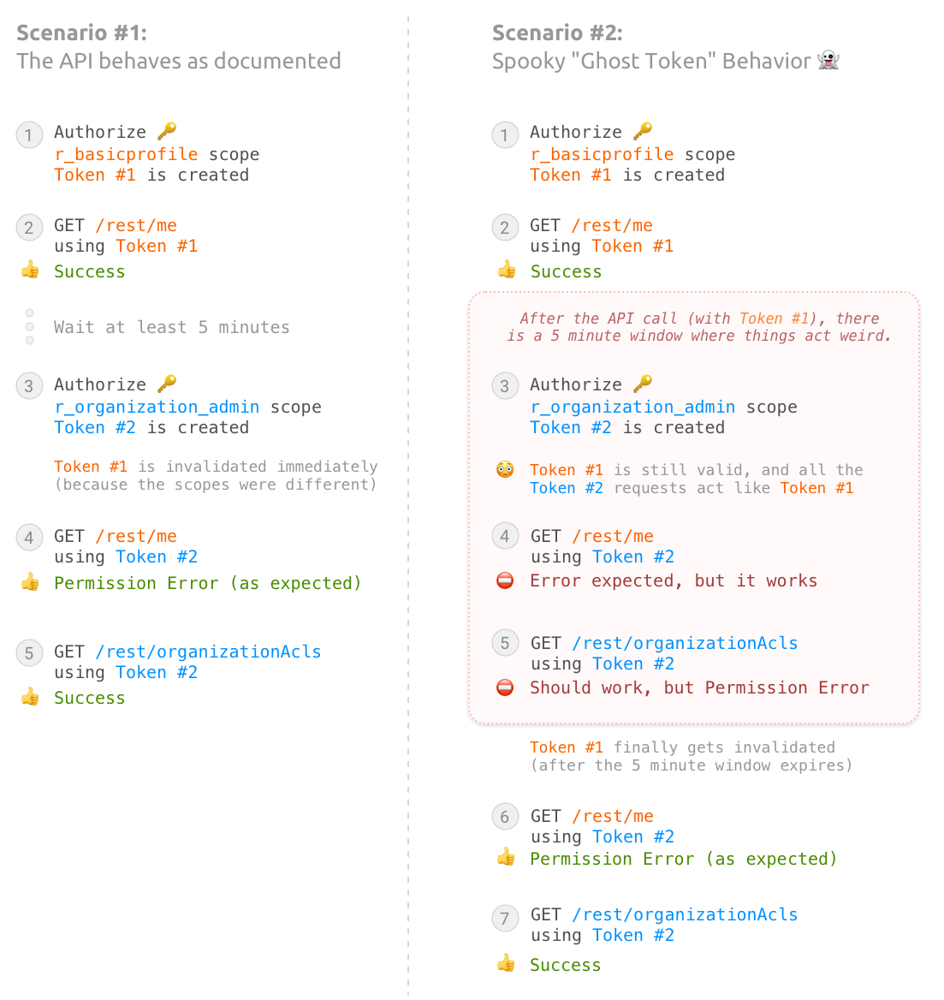

This demo app shows some unexpected behavior with the LinkedIn API auth system...
After creating a new access token, the old token can "stick around" for up to 5 minutes (after the last call made with the old token), and requests made with the new token will use the old token's permission scopes.
This makes development difficult. When a developer makes a change to the permission scopes (and reauthorizes), any API requests with the new token might use the old permissions (from a previous token) — if there was a request made with the old token in the past 5 minutes. This makes it seem like their changes didn't make any difference. But then (after the 5 minute window passes) the new permissions will suddenly start working.
This also creates problems when upgrading the LinkedIn-Version.
If the new version requires a change in permissions, the user will need
to reauthorize their account, but that could lead to a confusing
situation where they get permission errors for up to 5 minutes, because
the old token is still cached (and used) by the API. For example: in
LinkedIn-Version 202305, the minimum permission required
for the /rest/me
endpoint was r_liteprofile, but starting with
202306 it needs to be r_basicprofile. So, we
need to have our users reauthorize their LinkedIn account, to get a new
access token with the new scope, but they could get permission errors
from the old token, if it was used in the past 5 minutes.